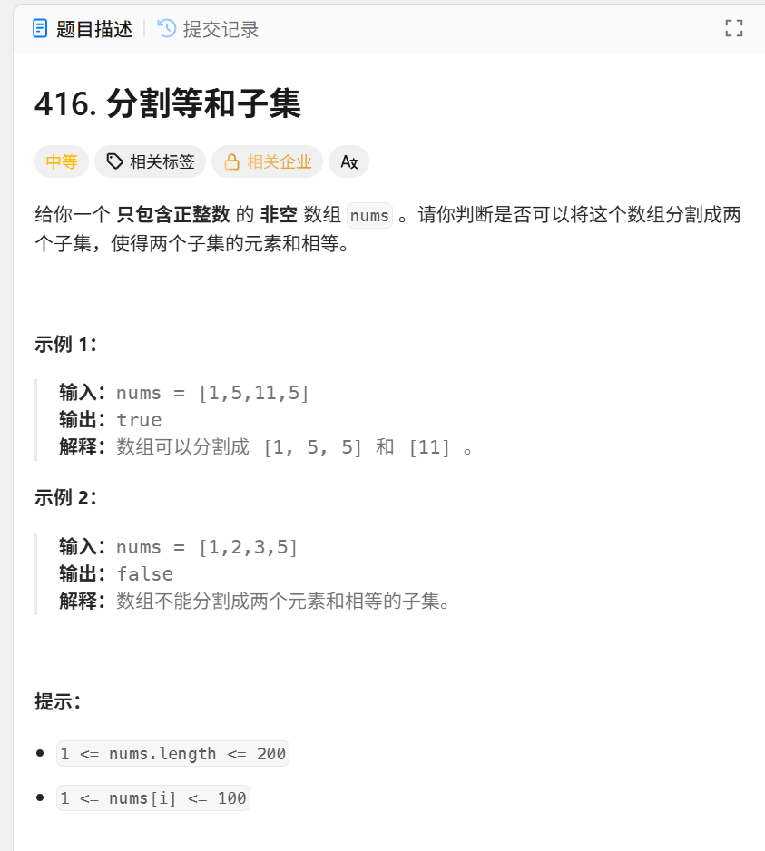

日期：2025-05-07
给出一个数组，判断是否能分成两个子集，和相同

#include <bits/stdc++.h>
using namespace std;
int main() {
ios::sync_with_stdio(false);
cin.tie(0);
int n;
while (cin >> n) {
vector<int> nums(n);
int sum = 0;
for (int i = 0; i < n; i++) {
cin >> nums[i];
sum += nums[i];
}
if (sum % 2 != 0) {//如果总和是奇数，直接不可能平分
cout << "false" << endl;
continue;
}
int target = sum / 2;
vector<int> dp(target + 1, 0);
for (int i = 0; i < n; i++) {
for (int j = target; j >= nums[i]; j--) {
dp[j] = max(dp[j], dp[j - nums[i]] + nums[i]);//dp[j]表示容量为j的背包最多能装多大价值的物品
}
}
if (dp[target] == target) {//判断是否装满
cout << "true" << endl;
} else {
cout << "false" << endl;
}
}
return 0;
}